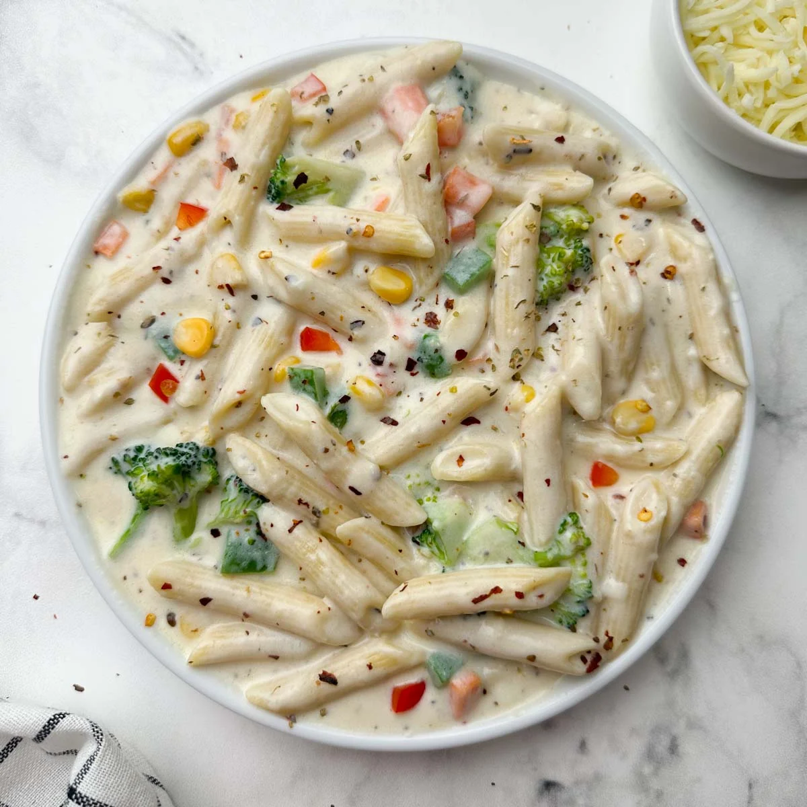
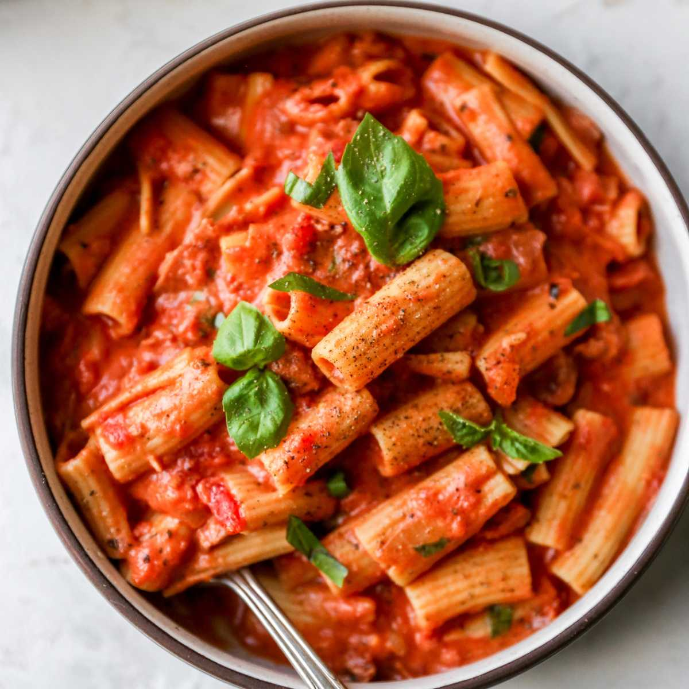
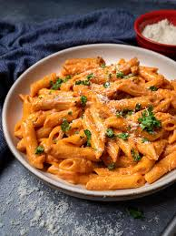

White Sauce Pasta (Bechamel Sauce Pasta)

Ingredients List
- 1 cup (100 grams) pasta (penne or macaroni)
- 1½ cup milk (full fat or plant milk)
- optional, (1 to 1¼ cup mix veggies of choice): ¼ cup carrots (fine chopped); ¼ cup corn kernels; ¼ cup broccoli or green peas; ¼ cup bell peppers (fine chopped)
- 2 tablespoons butter + ½ tablespoon oil or butter (to saute veggies)
- ¼ cup heavy cream or 2 to 3 tablespoons cheese (optional, parmesan, cream cheese, mozzarella or cheddar)
- 1½ tablespoon all-purpose flour
- ¼ teaspoon black pepper(crushed or ground, adjust to taste)
- 2 garlic cloves grated(optional, can use 1 teaspoon to tablespoon as per preference)
- ½ teaspoon oregano (or dried mix Italian herbs)
- salt as needed
- ½ teaspoon red chilli flakes (optional, adjust to taste)
Step-by-Step Instructions
Boil Pasta
- Bring 4 cups of water to a rolling boil in a large pot. Add pasta and ¼ teaspoon salt.
- Cook on a medium high flame till al dente. Check the instructions on the pasta package. They must be tender, firm and chewy but not mushy. Mine takes about 9 mins.
- Reserve about ¼ cup pasta cooked stock.
- Drain the pasta to a colander. Cover and keep aside.
- Pour ½ tbsp oil or butter to a pan. Add the vegetable and saute them on a medium high heat until slightly tender yet crunchy. This takes me about 5 to 6 mins. Remove to a plate and set aside.
Saute Veggies
- Pour ½ tbsp butter to a pan and saute vegetables until slightly tender yet crunchy, for 5 to 6 mins. Remove to a plate and set aside.
Make White Sauce
- Melt 2 tablespoons butter and add minced garlic (optional) and fry for 30 to 40 seconds on a medium heat.
- Stir in all-purpose flour.
- Saute well until theflour loses the raw smell, for about a minute. Don't brown the flour. Since this is a small quantity, the roux can become dry and clumpy. Its's just fine. Turn off the stove/heat and slowly pour ½ cup milk while you stir to incorporate the milk into the roux.
- Keep whisking till it looks creamy and uniform to prevent forming lumps. Pour the rest of the milk and stir well.
- Turn on the heat and cook on a medium-low until the white sauce becomes thick. Keep stirring/whisking and scrape the sides for a uniform sauce through out.
- Pour the heavy cream or cheese and mix well.
- The white sauce is done perfectly when it is thick enough to coat the back of the spoon. Alternately you can draw a finger/line through the coated spoon. The sauce should wipe clean and leave a space, meaning it is thick enough.
- Add the vegetables and the cooked pasta and mix well.
- Add pepper, oregano (or mixed italian herbs) and chilli flakes. You can also add a pinch of ground nutmeg if you want. If the sauce looks too thick (as it cools down), add 2 tbsps of the reserved stock so the sauce loosens a bit.
- Garnish white sauce pasta with red chilli flakes and crushed black pepper. Serve it hot or warm as the sauce thickens more when it cools down.
Preparation Time: 35 minutes
Difficulty Level: Easy
Red Sauce Pasta

Ingredients List
- 1½ cups (120 grams) fusilli or any other pasta (2 servings)
- 2 to 3 tablespoons extra virgin olive oil (divided)
- 1 teaspoon sea salt to cook pasta (+ more to season)
- 3 to 4 (1 tablespoon) garlic cloves (fine chopped)
- ¼ cup shallot or onions (finely chopped)
- 250 grams (1¾ cups) tomatoes (2 medium diced)
- ½ cup (70 grams) red bell peppers or white onion
- ½ to 1 teaspoons red chilli flakes (reduce for kids, adjust to taste)
- ½ teaspoon mixed Italian herbs or oregano (or 3 to 4 fresh basil leaves)
- ¼ teaspoon black pepper freshly crushed (optional + more to garnish)
- 6 cups water to boil pasta
- grated parmesan (to garnish, optional)
Step-by-Step Instructions
Preparation
- Spread tomatoes and bell peppers on a baking tray and add a tbsp. of oil. Bake for 15 mins at 425 F - 220 C, until the tomatoes are softened. Or alternately, pan fry the toamatoes and bell peppers on a medium high heat until blistered and soft, for about 5 to 6 mins. Or Air fry for 9 mins at 390 F/ 200 C.
- Cool down and blend to a smooth sauce with chili flakes.
- Bring water to a rolling boil and add the pasta along with salt (if required, check the package). On a medium high heat, cook al dente following the timings on the pack. Mine takes 11 mins.
- Reserve half cup pasta stock and drain to a colander. Cover and keep aside.
How To Make Red Sauce Pasta
- Heat a pan with oil and add garlic. Saute for a minute and add the onions.
- Saute until transparent. Stir in the chilli flakes and pour tomato puree. Saute for 3 to 4 mins and pour the reserved pasta stock.
- Cook for another 3 to 4 mins until thick and add the herbs, black pepper (optional) and salt. Taste test and add sugar if your sauce is too tart.
- Stir the pasta into the red sauce. Garnish with parmesan and black pepper if you want.
Preparation Time: 30 minutes
Difficulty Level: Easy
Pink Sauce Pasta

Ingredients List
For Boiling Pasta
- 1½ litre water
- 1 tsp salt
- 2 tsp olive oil
- 2 cup penne pasta
For White Pasta Sauce
- 1 tsp butter
- 2 tsp olive oil
- 2 tbsp maida
- 1½ cup milk, chilled
- ¼ tsp mixed herbs
- ¼ tsp chilli flakes
- ¼ tsp salt
- 3 tbsp cheese, grated
For Red Pasta Sauce
- 3 tsp olive oil
- 1 tsp butter
- 3 clove garlic, finely chopped
- ½ tsp mixed herbs
- ½ tsp chilli flakes
- 1 onion, finely chopped
- 1½ cup tomato puree
- 2 tbsp tomato sauce
- ½ tsp chilli powder
- ½ tsp salt
Other Ingredients
- 3 tbsp cheese, grated
- ¼ tsp chilli flakes
- ¼ tsp mixed herbs
Step-by-Step Instructions
How To Boil Pasta
- Firstly, in a large vessel take enough water.
- Add 1 tsp salt, 2 tsp olive oil and get the water to a boil.
- Now add 2 cup penne pasta and give a good stir. This helps to prevent pasta from sticking to the bottom of the pan.
- Boil for 9 minutes or check the package instruction to cook the pasta until al dente.
- Drain off the water and keep the boiled pasta aside.
How To Make White Pasta Sauce
- Firstly, in a pan heat 1 tsp butter, 2 tsp olive oil and tbsp maida.
- Roast on low flame until the maida turns aromatic.
- Now add 1½ cup milk and stir continuously. Make sure the milk is chilled, else you may have lumps in the sauce.
- Keep stirring until the sauce thickens up slightly.
- Now add ¼ tsp mixed herbs, ¼ tsp chilli flakes, ¼ tsp salt and 3 tbsp cheese.
- Give a good mix. White sauce for pasta is ready. Do not overcook as the sauce thickens and turns to paste consistency.
How To Make Red Sauce For Pasta
- Firstly, in a large wok heat 3 tsp olive oil, 1 tsp butter, 3 clove garlic, ½ tsp mixed herbs and ½ tsp chilli flakes.
- Saute on low flame until the spices turn aromatic.
- Now add 1 onion and saute until the onions sweat slightly.
- Further, add 1½ cup tomato puree and cook on medium flame until the puree thickens slightly.
- Also add 2 tbsp to tomato sauce, ½ tsp chilli powder and ½ tsp salt.
- Continue to cook until the sauce thickens. Red sauce is ready for the pasta.
How To Make Pink Sauce For Pasta:
- Now combine prepared white sauce with the red sauce. Add as required, as this white sauce makes the pasta creamy.
- Now you can see the colour of the pasta sauce has been changed to pink. Pink sauce is ready to prepare pasta.
- Add in boiled pasta and give a good mix.
- The pasta is so creamy and saucy.
- You can also add 3 tbsp cheese, ¼ tsp chilli flakes and ¼ tsp mixed herbs.
- Mix well combining everything well.
- Finally, enjoy pink sauce pasta with more cheese.